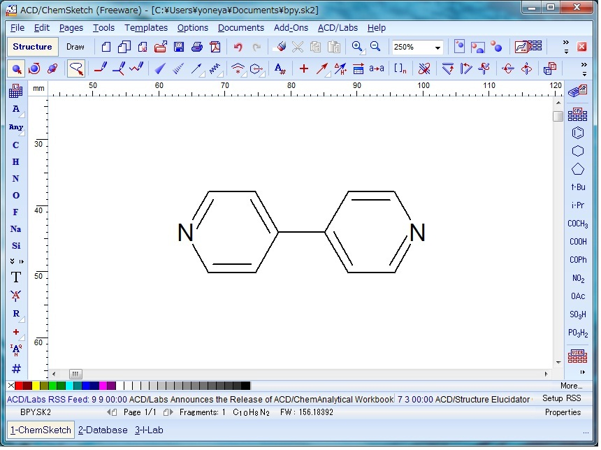
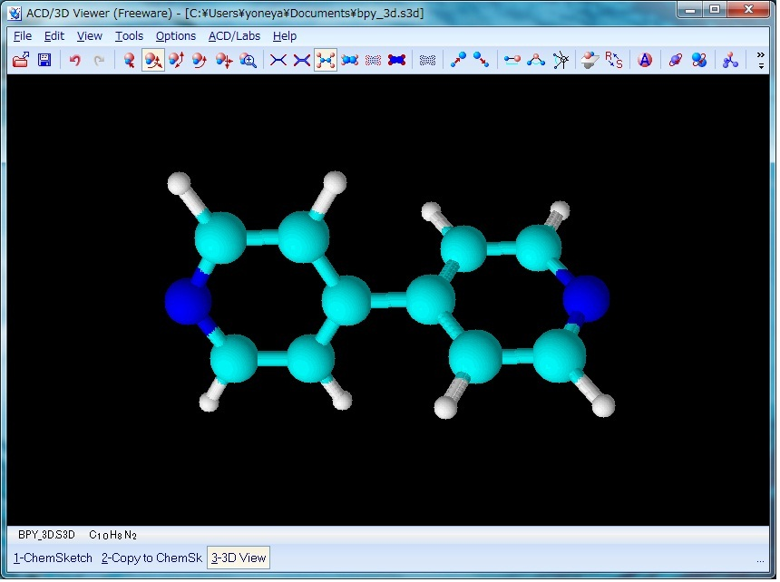
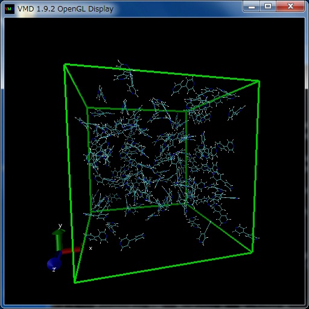
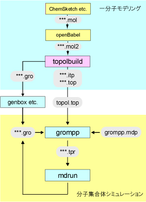

フリーな分子動力学計算プログラムの一つである GROMACS と連携ソフトウエアを用いて、一般分子（非生体高分子）の１分子モデリングから分子集合体の計算を WindowsPC を用いて行う方法を説明する。
ChemSketch Freeware
Windows 向けの分子構造描画ソフトChemSketchのフリー版で、MDL-mol ファイル形式の分子構造ファイルを作成するために用いる。 上記の形式のファイルがアウトプットとして得られるソフトであれば ChemOffice: ChemDraw＋Chem3D 等何を使って作成しても良いが、注意点として、作成する分子構造ファイルは水素原子を含んだ三次元座標データである必要がある。
ChemSketch Freeware は、Advanced Chemistry Development, Inc のホームページからダウンロード可能である（ユーザー登録が必要）。
ダウンロードしたインストーラーファイルをダブルクリックして、後は表示に従えば、一般のwindowsアプリケーションと同様にインストールできる。OpenBabel
オリジナルのBabelから重用されてきたきわめて多種の化学関連ファイル形式変換が可能なフリーソフト。 Gasteiger、charge equilibration（QEq）法等の簡易手法による点電荷計算機能なども有する。 MD計算のための点電荷計算には、GaussianなどのMO計算プログラムの結果から、electro staticpotential （ESP）電荷として得られたものを使うのが主流となっているが、以下ではOpenBabelによるGasteiger電荷を用いる。
VMD (Visual Molecular Dynamics)
OpenBabelは、Windows版 OpenBabel-2.4.1 (2023.02時点の最新版は ver. 3.1.1だが、babelコマンドがオプション等が異なるobabelに代わっているため、旧バージョンを使用)がここからダウンロード可能である。
ダウンロードしたインストーラーファイルをダブルクリックして、後は表示に従えば、一般のwindowsアプリケーションと同様にインストールできる。MD計算のスナップショットや、アニメーションの表示に用いる分子表示ソフト。
更新情報(2023.02)
VMD は、ホームページから Windows 版をダウンロード可能である。
ダウンロードしたインストーラーファイルをダブルクリックして、後は表示に従えば、一般のwindowsアプリケーションと同様にインストールできる。
以前必要だった、Gowインストールは不要になりました。
GROMACS, topolBuild
以上のソフトをインストールした後に、分子動力学シミュレーションソフトGROMACSと、その支援ソフトtopolBuild および のバイナリをダウンロード・インストールする。
まず、スタートメニュー - すべてのプログラム - アクセサリ（あるいはシステムツール） - コマンドプロンプト を選択して、Windowsの"コマンドプロンプト"を起動する。
ここで、下記のコマンドを入力して、MD 計算に必要なソフトウエアをインストールするバッチファイルをまずダウンロードする。curl -OL https://github.com/makoto-yoneya/makoto-yoneya.github.io/raw/master/MDforPRIMERS/install_dos.bat <Enter> (Enterキー入力を表す。以下省略)
次にダウンロードしたこのバッチファイルをコマンドプロンプトから次の様に入力して実行する。
install_dos.bat
これによって、 GROMACS (ver.2023), topolBuild-1.3が自動ダウンロード・インストールされる。
更新情報(2023.03)
Windowsネイティブ版GROMACSをver.2023にアップデートしました。
上記のバッチファイル (install_dos.bat) は、インストール状況をチエックし、何らか理由でインストールに失敗したモジュールがあればそれのみ再試行する。 二回目以降の実行で、すべてＯＫと表示されればインストール完了を確認できる。
以上で、演習環境が整うはずである。 上記の ChemSketch, OpenBabel, VMD を除くすべてのソフトウエアは、C:\optフォルダ以下にインストールされており（トータル約30MB）、これらすべてをアンインストールするには、このoptフォルダを削除すればよい。
1. 一分子モデリング
1.1 分子構造ファイルの準備
最初のステップとして、対象とする分子（ここでは MOFの有機配位子 4,4'-bpyを例に説明）の分子構造ファイルを、水素原子を含んだ形で三次元座標として、MDL-mol ファイルで ChemSketch Freeware 等を用いて作成する（ChemOffice の場合は後述）。
あるいは、、下記の図２に対応する三次元座標の4,4'-bpyのサンプルmolファイルが下記コマンドでダウンロード可能なので、分子エディタによる作業をスキップし、最初はこのファイルで1.2節以下の手順を試すことを推奨する。
curl -OL https://github.com/makoto-yoneya/makoto-yoneya.github.io/raw/master/MDforPRIMERS/bpy-aa.mol
ChemSketch Freewareを用いた化学構造の描画は直感的に可能である。原子のインデックス番号は、基本的に作画した順に振られていくので、図１のように端から番号をつけたければ作画の順番を意識するとよい。

Fig. 1 Drawing 4,4'-bpy with ChemSketch
原子の番号の表示は、 Edit メニューから Select All で分子全体を選択し、次に Tools メニューから Structure Property を選択して表示される小ウインドウの Atom メニューの N(Numbering) をクリックし、右に表示される Show チェックボックスを ON にして Apply すると可能である。
図１のような水素原子を省略した構造を作成した後、 ACD/Labs メニューから 3D Viewer を起動し、左下に表示されるリストから ChemSketch を選択して一度 ChemSketch に戻り作成した分子構造を表示させる。 次に左下のリストに表示される copy to3D Viewer を選択すると、 ChemSketch で作成した分子構造が 3D Viewer に表示される。 次に、 Tools メニューから 3Doptimization を実行する。 これにより、図２の様に、省略されていた水素原子が付加され、同時に分子構造を三次元化することができる。
上記 3Doptimization を実施しないと次のステップで（topolbuild実行時に）エラーが発生するので注意。
Fig. 2 4,4'-bpy after 3D optimization
ここで、次に左下のリストの copy to ChemSketch を選択し、3D Viewer でoptimizeした分子構造を ChemSketch に上書きする。
次に、ChemSketchのFile メニューから export で、ファイルの種類として MDL molfiles [V2000] を選択し、適当なファイル名 (bpy-aa.mol等) をつけて下記のフォルダに保存する。C:\Users\ユーザー名（あるいは C:\ユーザー\ユーザー名）
ChemOffice の場合は、ChemSchetchの代わりにChemDrawで分子構造を２次元的に作成した後、ChemDrawの上段メニューからView - Show Chem3D HotLink Windowを実行することにより、省略されていた水素原子が付加され、三次元化された分子構造がサブウインドウに表示される。
次にこのサブウインドウ左下隅のアイコン（Launch Chem3D）をクリックして、Chem3Dを立ち上げ、その上段メニューからFile - Save Copy Asで表示されるサブウインドウで、上記のChemSketch+3D Viewerと同様にファイルの種類として MDL molfiles （V3000でない方） を選択し、適当なファイル名 (bpy-aa.mol等) をつけて上記のフォルダ保存する。この MDL-mol ファイル中には、分子を構成する原子の原子種と座標が保存され、また原子間結合についても単結合、二重、三重結合の属性付きで保存されており、これらの情報は、次のステップでの topolbuild による力場パラメータの自動割り当てに活用される。
1.2 トポロジーファイルの生成
次のステップは、上記の分子構造（MDL-mol ）ファイルから MD 計算に必要なトポロジーファイルの作成である。
MD 計算に必要なトポロジーファイルを作成する方法の一つとして、Bruce D. Ray 氏によるプログラム topolbuild を使う方法がある。まず、
C:\Users\ユーザー名（あるいは C:\ユーザー\ユーザー名）
フォルダ中のバッチファイル、GMXRC(あるいはGMXRC.bat)をダブルクリックし、GROMACS等のコマンドパスの設定された、Windowsのコマンドプロンプト（黒いDOS窓）を起動する。
上記のコマンドプロンプトを開いた直後は、通常は
以後のコマンド入力はこの環境で行う。C:\Users\ユーザー名
というフォルダになっている。 前節でChemSketch等で作成したMDL-mol ファイル（bpy-aa.molとする）がこのフォルダに無ければ、通常の Windows のファイル操作で、上記のフォルダに移動しておく。
topolBuild は入力分子ファイルフォーマットとして、sybyl-mol2ファイルしか受け付けないので、まず最初にChemSketchで作成したMDL-molファイルをフォーマット変換プログラムopenBabelを使ってsybyl-mol2ファイルに変換する。
具体的には、"コマンドプロンプト"で次のように入力する。
babel -imol bpy-aa.mol -omol2 bpy-aa.mol2 --title bpy-aa
上記で、"--title" のハイフォンのみ２個である点に注意されたい。
次に、topolBuildにより GROMACS による MD 計算に必要なトポロジーファイルを作成するため、同様に"コマンドプロンプト"で次のように入力する、
topolbuild -n bpy-aa -dir C:\opt\topolbuild -ff gaff -purge 0
"Bond record does not end with @<TRIPOS>"
等の入力mol2ファイル書式に関するWarning が表示される事が有るが、これは無視して良い。
"Incomplete mol2 file after bonds record"
等でエラーとなってしまう場合には、コマンドプロンプトで、
echo @^<TRIPOS^> >> bpy-aa.mol2
を実行して、mol2ファイルの最後に @<TRIPOS>という行を追加した後に、再度上記のtopolbuildコマンドを実行すると解決する。
topolbuild実行時の"-ff gaff"は、使用する力場としてgeneral AMBER力場(GAFF)を使うことを指定している。topolBuildでは他に、AMBER、OPLS all-atom、GROMOS united-atom 力場等を選択可能である（同時に -dir *** の内容も変える必要がある）。上記により、フォルダ
C:\Users\ユーザー名
にMD計算に必要な各種ファイルが出来ているはずである。 この中で以降の GROMACS でのMD計算で用いるファイルは、である。
- bpy-aa.gro : 一分子座標ファイル
- ffbpy-aanb.itp : 力場関連ファイル
- bpy-aa.top : トポロジーファイル
- ffbpy-aa.itp : 力場関連ファイル
ここで、最初の3つについて簡単に説明しておく。最初のファイルbpy-aa.groは、 4,4'-bpy 分子の一分子座標ファイルで、基本的には最初に作成した MDL-mol 形式をGROMACS の標準の座標ファイル形式 (*.gro形式) にフォーマット変換したものである（原子インデックスが変更になる場合もある）。
次の２つのファイルffbpy-aanb.itp, bpy-aa.topには、 4,4'-bpy 分子の GAFF に基づいた分子モデルの情報が記述されている。
概要を説明すると、ffbpy-aanb.itp の [ atomtypes ]以下のエントリには、この 4,4'-bpy 分子モデルで使われている９種類の GAFF の原子タイプ (C3, OS, CA等) が１行ごとに書かれている。
bpy-aa.top の [moleculetype ]エントリにあるbpy-aaがこの分子モデルの名前になる。
その次の[ atoms ]エントリには、図１の 4,4'-bpy 分子モデルの原子番号毎の原子タイプ、点電荷、質量等の情報が、全 41 原子について記述されている。
その後には、[ bonds ], [pairs ], [ angles ], [ dihedrals ]のそれぞれのエントリ毎にそれぞれこの 4,4'-bpy 分子モデルに含まれている、結合、 1-4 分子内相互作用ペア、結合角、二面角の力場パラメータの情報が記述されており、これらのパラメータは、基本的に GAFF のパラーメータリストから抽出されたものとなっている。
ファイルbpy-aa.top の [ atoms ]エントリのchargeカラムにある原子毎の点電荷の値は、OpenBabelによって、Gastiger 法計算で得られた電荷となっている。bpy-aa.topの後半最後の部分は、系全体の情報を記述しており、主要部分を示すと、
[ system ]
; title from mol2 input
bpy-aa
[ molecules ]
; molecule name nr.
bpy-aa1
上記の最後の行の数字は、系に含まれている 4,4'-bpy 分子の数に対応している（上の例ではtopolbuildによるこのファイルの自動生成時のディフォールト値の 1 分子で、 この数は計算する系中の分子数に合わせて変更する必要がある（後述）。
2. 多分子系のシミュレーション
2.1 初期構造の準備
前節で作成した一分子モデルを用いて多分子シミュレーションを行うためには、その初期条件として多分子からなる初期構造が必要となる。 現実的な計算時間で熱平衡状態に近づけるためには、適切な初期構造の選択が重要となる。 計算に用いる初期構造を得る方法としては次が考えられる。
この内、最初のランダム配置した初期構造は、 GROMACS のコマンド gmx insert-molecules によって作成可能である。 "コマンドプロンプト"で、次のように入力する。
- 乱数等を用いランダムに分子を配置して用いる
- X 線回折による結晶構造データーを用いる
- 人為的な結晶構造を作成して用いる
gmx insert-molecules -ci bpy-aa.gro -nmol 128 -box 5 5 5 -o bpy-aa-128.gro
上記のコマンドは、-ciで指定された一分子座標ファイルの分子を、-nmolで指定された分子数（128 分子）-boxで指定された 5nm x 5nm x 5nm の MD セル（通常これが3次元周期境界条件の単位セルとなる）中に配置して、 -oで指定された座標ファイル名に書き出す。
上記で作成された座標ファイル（拡張子が.groの GROMOS 座標フォーマット）の分子配置は、プログラムvmdにより図４のように可視化できる。
具体的には"コマンドプロンプト"で、vmd bpy-aa-128.gro
とコマンド入力する。

Fig. 3 Viewing bpy-aa-128.gro file with VMD
分子の回転等の操作は、ウインドウ内でマウスボタンを押しながらマウスを動かすことにより可能である。
周期境界を表すMD セルは、vmdを実行したコマンドプロンプトで、
pbc box
と入力するか、あるいは、VMDのインストールフォルダにあるvmd.rcというファイルの最後に
user add key b {pbc box -color green -width 1}
を追加・保存し、分子表示画面がアクティブな状態でキーボードのｂを押すと表示できる。
終了は file メニューから exit を選択する。実際に試して見ると判るが、密度が低い系の作成は容易であるが（genbox実行時のメッセージの最後に、作成された構造の概算密度が、単位 g/l で表示される）、液相に対応した 1.0g/cm3 = 1000g/l に近い密度の構造を（エネルギー的に禁則な）分子のオーバーラップ無しに作るのは困難である。
2.2 エネルギー最小化計算
トポロジーファイルと初期構造ファイルが揃えば、原理的にはこの時点でも MD 計算を始めることが可能である。 しかし、上記のようにして人為的に用意した初期構造は非現実的に近接した分子を含む可能性が高い。 このような状態から MD 計算を始めると、上記の近接分子に起因した高いエネルギーが運動エネルギーに変換され、 MD 計算における時間積分が不安定となる。 したがって、このような非現実的な近接を取り除く目的で、まずエネルギー最小化を行うのが一般的である。
エネルギー最小化計算を行うには、まず
の３つの入力ファイルをプリプロセッサプログラムgromppにより１つのバイナリトポロジファイル（拡張子.tpr）に変換する。
- 初期構造ファイル（ディフォールトの拡張子.gro）
- MD 計算パラメータファイル（拡張子.mdp ディフォールトのファイル名はgrompp.mdp）
- トポロジーファイル（拡張子.top ディフォールトのファイル名はtopol.top）
MD計算パラメータファイルは、ここではエネルギー最小化計算として最低限のものを、下記のコマンド入力によりファイル名 em.mdp として作成する。
echo integrator=steep > em.mdp
echo nsteps=100 >> em.mdpトポロジーファイルは、上述の様に、最後の行を系中の分子数に対応した数字に変更する必要がある。
このファイルを編集するには、まず次のファイルコピーコマンド copy にてテキストファイルとしてコピーする。copy bpy-aa.top bpy-aa.txt
上記、bpy-aa.txt をダブルクリックして普通のテキストファイルとして開き、
最後の行のtopolbuildによるこのファイルの自動生成時のディフォールト値の 1 分子
bpy-aa 1
を、実際に計算する系中の分子数（上記の例では128）に合わせ次の様に変更して保存する。
bpy-aa 128
最後に、以下におけるコマンド入力の手間を省くため、ディフォールトのトポロジーファイル名 (topol.top) へファイル名変更コマンド ren でファイル名を変更しておく。
ren bpy-aa.txt topol.top
これらのディフォールトのファイル名を用いると、上記のバイナリトポロジファイルへの変換を行うコマンドラインは例えば以下のようになる（ファイル名の拡張子.gro, .tpr等は省略可能）。
gmx grompp -c bpy-aa-128.gro -o bpy-aa-128_em1.tpr -f em.mdp
上記によりバイナリトポロジファイルが生成される。 以上で、エネルギー最小化計算の準備が出来た。 実際にエネルギー最小化計算を行うプログラムはmdrun(後述の MD 計算と同じ) で、具体的なコマンドラインは例えば次のようになる。
gmx mdrun -deffnm bpy-aa-128_em1 -v
上記コマンドラインの -deffnm オプションは，ディフォールトのファイル接頭名を指定する物で，これにより、
等が暗黙の内に用いられる。
- bpy-aa-128_em1.tpr : バイナリトポロジファイル
- bpy-aa-128_em1.gro : 出力座標ファイル
実際に計算に用いられた計算パラメータは、省略されたもののディフォールト値も含め、ファイルmdout.mdpに出力されるのでチエックすると良い。 上記コマンドラインの最後の-vオプションを付けることにより、エネルギーがより低い状態に落ちていく過程がメッセージ出力され、これにより（あるいは出力される*.logファイルを開いて確認することにより）必要に応じて複数回に分けてエネルギー最小化を行う。
上記のエネルギー最小化後の出力座標ファイルは、前述のようにVMDで可視化できる。2.3 スタートアップ MD 計算
上記のようにしてエネルギー最小化された構造を得たので、いよいよ MD 計算を行う。 エネルギー最小化された構造には原子の速度の情報が無いので、適当な温度を設定し、それに対応したボルツマン分布での原子速度生成を設定（下記のgen_vel = yes) し、スタートアップ MD をまず行う。
MD 計算パラメータファイルは例えば以下のように設定する。
dt = 0.00025
nsteps = 500
tcoupl = v-rescale
tc-grps = SYSTEM
tau_t = 0.002
ref_t = 200.0
gen_vel = yes
gen_temp = 200.0
上記の内容を、su.txt 等のファイル名でテキストファイルとして”メモ帳”等のエディタで作成・保存し、その後、ファイル名変更コマンド ren で下記の様に su.mdp にファイル名を変更しておく。
ren su.txt su.mdp
トポロジーファイル(topol.top)に変更は無くそのままで良い。
エネルギー最小化の時と同様に、３種類のファイルを統合してバイナリトポロジーファイルを作る。初期座標ファイルとしては、上記で作成したエネルギー最小化された構造を用いる。
gmx grompp -c bpy-aa-128_em1 -o bpy-aa-128_su1 -f su
上記では、拡張子.gro, .tpr, .mdpが省略されている。得られたバイナリトポロジーファイルを用いてスタートアップ MD を行う。
gmx mdrun -deffnm bpy-aa-128_su1 -v
上記の例では、初期温度は 200K に設定され、時間刻み 0.00025ps(0.25fs) で 500 ステップ (トータル 0.125ps) 計算している。
2.4 継続 MD 計算
スタートアップMD計算以降は、上記の MD 計算パラメータファイル中の、gen_vel = yes 行を削除（デイフォールトは gen_vel = no）して、 出力座標ファイル中に原子座標と共に保存された速度データを用いて計算を継続する。 MD 計算パラメータファイルは例えば以下のようになる。
dt = 0.0005
nsteps = 2000
nstxtcout = 10
tcoupl = v-rescale
tc-grps = SYSTEM
tau_t = 0.03
ref_t = 300.0
上記を、su.mdp と同様にして、”メモ帳”等のエディタで、ファイル名 grompp.txt として作成し、上記 su.txt と同様に
ren grompp.txt grompp.mdp
でファイル名を grompp.mdp に変更する。この例では、温度は 300.0K に設定され、時間刻み 0.0005ps(0.5fs) で2000 ステップ（トータル 1ps）計算しているが、全体の計算の長さは計算の目的により数百 ps から百 ns 程度まで様々である。 この長さの計算は通常長時間かかるため、いくつかのジョブに分けて途中経過を見ながら実行する。 ディフォールトのファイル名grompp.mdpとして作成しておくと、後述の様にgromppで計算パラメータファイルの指定 (-f grompp.mdp) を省略できる。
今までと同様に、バイナリトポロジーファイルを作成し、それを用いて MD 計算を行う。
gmx grompp -c bpy-aa-128_su1 -o bpy-aa-128_md1 <Enter>
start gmx mdrun -deffnm bpy-aa-128_md1 2> efile
計算時間が掛かるジョブは、上記の様に、コマンドラインの前にstartをつけてバックグラウンドジョブとして計算させると、 上記コマンド入力後すぐにプロンプトに戻るので、平行して他のコマンドが実行できる （前回まで画面に直接出力されていたメッセージは、efileと言うファイルに出力されている）。
上記の計算では、nstxtcout = 10で指定した 10 ステップ毎に、ファイル bpy-aa-128_md1.xtc に計算途中の原子トラジェクトリを出力している。 このトラジェクトリ出力は、後で種々の解析に用いたり、可視化プログラムvmd等でアニメーションとして見る事ができる。
トラジェクトリファイル (bpy-aa-128_md1.xtc等）をアニメーションとして見るには、同じ系の座標ファイル (bpy-aa-128_md1.gro等）と一緒に、
vmd bpy-aa-128_md1.gro bpy-aa-128_md1.xtc
とコマンド入力すれば良い。
アニメーションの再生・停止等は、Mainウインドウ下部のそれぞれのボタンを押すことにより可能である。
実際にアニメーションを見ると、周期境界条件であるMDセルをまたぐ分子が分裂して表示され、その間の結合が異常に長く表示される場合がある。
その場合は、GROMACSのツールtrjconvにて、例えば、echo 0 | gmx trjconv -s bpy-aa-128_md1.tpr -f bpy-aa-128_md1.xtc -o bpy-aa-128_md1mod.xtc -pbc mol
により周期境界処理の方法(-pbc mol)を変えて変換したトラジェクトリファイルで、
vmd bpy-aa-128_md1.gro bpy-aa-128_md1mod.xtc
としてアニメーションを表示すると良い。
ここまでのまとめとして、全体の流れとプログラム、ファイルの関係を図４に示した。

Fig. 4 modelling and simulation flowchart
以上、最も単純な単成分系の例を説明したが、複数成分系の例として溶媒として水分子を加えた例について付録に示したので参考にされたい。
4. おわりに
フリーに入手できるソフトウエアにより、手元の WindowsPC で MD 計算を実感して頂くことを念頭に、実践的な演習を試みた。 （注意本稿の内容や、関連するプログラムの実行の結果発生した PC 障害等に関しては一切保障できないので、くれぐれもオウンリスクにて実行願います）。
実践的な側面に重きを置くあまり、基礎理論や厳密さを欠いている (計算例での分子数 128 や計算条件等) のは大きな欠陥であるが、これらに関しては、教科書等により補って頂きたい。 これらの教科書には記載されていない、実際に計算を始める上で必要となる事柄を相補的に解説したつもりである。 時間の関係上、 GROMACS や topolbuild等のコマンド及びそのオプション等についても、詳しい説明ができなかったが、それぞれ脚注に示した URL に詳細なマニュアル (特にGROMACS のマニュアルは実践的な教科書としても優れたものである) があるので、必要に応じて御確認頂きたい。
さらに進んだ内容として、系の圧力の設定方法や、長距離相互作用の取り扱いなどの計算条件設定方法や、計算結果からのGROMACSに計算ルーチンの付属していない各種の物性値の解析方法については、この記事を参考にされたい。
さらに分子モデリングについても、今回説明した水素原子をあらわに含んだ “all-atom”モデルから近似を進めた、水素原子を省略し “united-atom”として扱うモデルから、 “N to onemapping”に基づくさらに近似を進めたモデル等の、いわゆる “粗視化分子モデル ”については、この記事を参考にされたい。
付録: 溶媒として水を追加する例
上記演習で作成した初期構造ファイル
bpy-aa-128.gro
に溶媒として水を追加する例について説明する。まず、下記コマンドにて溶媒水分子を追加する。
gmx solvate -cp bpy-aa-128.gro -cs spc216.gro -o bpy-aa-128spc.gro
ここで、spc216.gro は、GROMACSにディフォールトで同胞されている、熱平衡済の SPC（Simple Point Charge）水モデル216分子の構造ファイルである。
上記コマンドを実行すると、Number of SOL molecules: 3004
とのコメントが画面に表示されるが、この 3004 が上記コマンドで追加された水分子の数を表す。
この数を用いて、topol.topファイルの最後の行の次行として、SOL 3004
を追加する。
結果として、topol.topファイルの最後は、[ molecules ]
; molecule name nr.
MOL 128
SOL 3004
となる。
後は、上記演習の初期構造ファイル
bpy-aa-128.gro
の代わりに
bpy-aa-128spc.gro
を用いて同じ手順に従えば、溶媒としてSPC水モデルを加えた系のMD計算が実行できる。上記の SPC水モデルの場合は、topol.topファイル後半に、
; Include water topologyとの記述が topolbuild によりあらかじめ設定済のため、上記の様に比較的簡単に追加可能であるが、 SPC水以外の溶媒の場合は、上記 gaff_spcw.itp の代わりに当該溶媒分子の分子トポロジーファイルを作成・指定する必要がある。
#include "gaff_spce.itp"
2023年03月25日更新
makoto-yoneya@frontier.hokudai.ac.jp